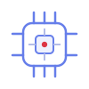
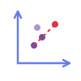
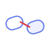
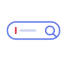
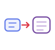
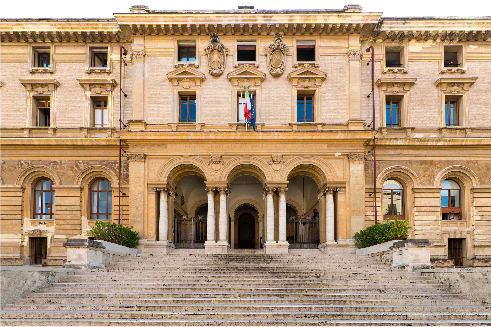
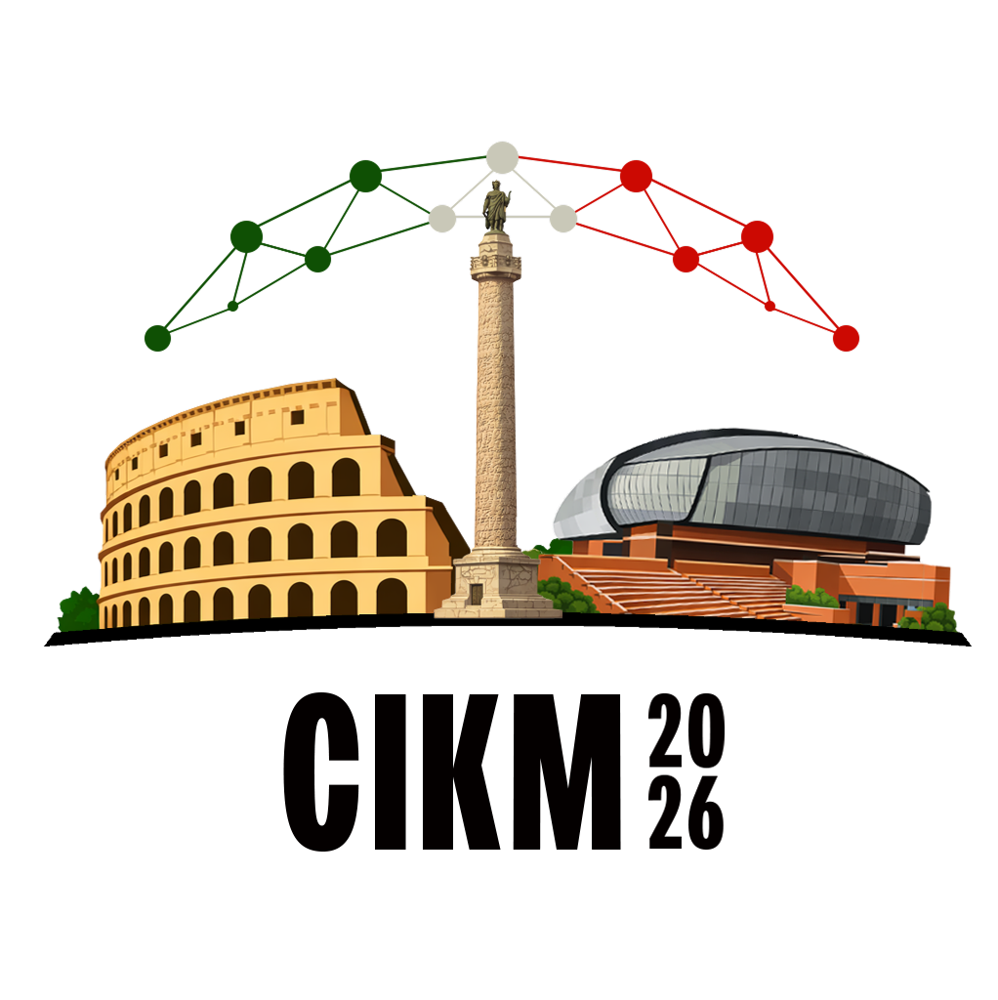
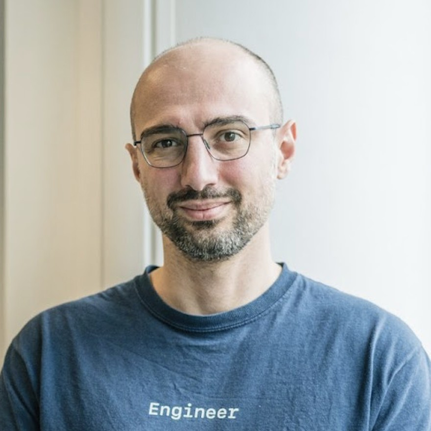
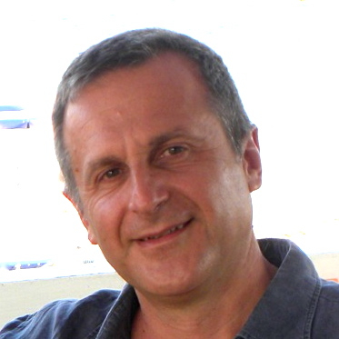

Sunday, November 8th, 2026 | Sapienza University of Rome | Rome, Italy
Modern information retrieval (IR) is built on pretrained language models whose parametric knowledge has driven strong gains in semantic understanding. Yet, this knowledge is frozen at training time, opaque, and shallow on long-tail, domain-specific, and fast-changing information, yielding imprecise, non-factual, or poorly grounded results. Knowledge-enhanced IR addresses this by augmenting retrieval systems—and the language models that power them—with external knowledge: unstructured or structured, gold or synthetic, increasingly across modalities. Large language models are now reshaping how this knowledge is acquired and integrated—for example, autonomous agents that plan, reason, and decide what to search; automated knowledge curation and linking; and systems that interleave retrieval and generation, learning when to consult external evidence and when to answer from parametric knowledge.
The Third Workshop on Knowledge-Enhanced Information Retrieval (KEIR @ CIKM 2026) gathers researchers and practitioners from IR, natural language processing, data mining, and knowledge management to advance the principled integration of external knowledge into IR. KEIR welcomes both methodological and applied contributions, with particular attention to knowledge-intensive, domain-sensitive fields such as science, medicine, law, and finance, where factuality, trust, and discovery are paramount. Medical and clinical applications are a natural proving ground: from biomedical literature search and question answering to clinical decision support, retrieval must ground every answer in curated, verifiable knowledge.
KEIR is a half-day, in-person workshop co-located with the 35th ACM International Conference on Information and Knowledge Management (CIKM 2026). Registration is required through the official CIKM 2026 conference website. The workshop takes place at Sapienza University of Rome. Please note that, following the CIKM 2026 policy, the conference and its workshops are fully in person: hybrid presentation or attendance options cannot be accommodated.
Register on the CIKM 2026 Website

San Pietro in Vincoli Campus, Faculty of Engineering, Sapienza University of Rome
Via Eudossiana 18, 00184 Roma ·
Open in Google Maps

35th ACM International Conference on
Information and Knowledge Management

EMBL Rome
Fabio Petroni is a Group Leader at EMBL Rome, where he works on AI-driven scientific discovery. He is a co-founder of Samaya AI, a financial knowledge-discovery company, and previously worked in Meta AI’s FAIR lab, where he contributed to early foundational work in knowledge-intensive NLP and co-developed Retrieval-Augmented Generation (RAG).
Keynote
Agentic Biology
Biology is among the most complex areas of discovery, with enormous knowledge gaps. Humans alone can’t cope with the open-ended search space. Scientists need to collaborate with agents to unlock a new era of scientific discovery. In this talk, I will describe my journey into this topic, our early contributions, and the vision ahead.
University of Bologna
University of Bologna
University of Bologna
Huazhong University of Science and Technology
University of Glasgow
IT:U Austria & IBM Research

University of Bologna
Tentative program. The afternoon slot (14:00 - 18:00) is confirmed by CIKM 2026; the timing and order of the sessions below may still change.
40 minutes of presentation, 10 of questions
Six selected accepted papers, presented in person
Contributed works, presented in person
Speakers and attendees collaboratively identify open problems and shape a shared research agenda
KEIR @ CIKM 2026 received 32 submissions, the highest number in the history of the KEIR series. After double-blind peer review, 15 papers were accepted, for an acceptance rate of 47%. Papers are listed in alphabetical order by title.
Anamnesis: Benchmarking Patient-Level Retrieval-Augmented Generation over Clinical Records on Smartphones
BenchRAG-OD: Benchmark-Retrieval-Augmented Guidance for Evidence-Grounded Outlier Detector Selection
Bridging Concepts: Multi-Agent Reasoning over Scientific Concept Graphs for High-Impact Research Prediction
CacheGraft: Enhancing Retrieval-Augmented Generation via Latent-Space Document Enrichment
Concepts Complement Dense Semantics: Learning Compact Sparse Spaces for Text-Image Retrieval
Constraint-First Graph Pruning for Enterprise Knowledge Base Deduplication
On the Structural Memory of LLM Agents
Retrieving Transferable Knowledge for Cross-Task Continual In-Context Learning
SciDef: Datasets and Tools for Automated Definition Extraction from Scientific Literature with LLMs
Soft Graph Tokens: Continuous Heterogeneous Graph Interfaces for Knowledge-Enhanced Language Models
Type-Directed Synthesis of Executable Pipelines over Deep Web Scientific Resources
What Drives Next-Occupation Prediction?
When Does Learned Graph Sparsity Actually Pay Off? Selection Utility and Realized Efficiency in Knowledge Graph Completion
When Forgetting Breaks Retrieval: Deletion Robustness of Vector Indexes for Dynamic Knowledge
Which Graph RAG Retrieval Components Should We Use? A Case Study on Knowledge Graphs and Long-Horizon Agent Memory
Springer Nature will publish the KEIR @ CIKM 2026 post-proceedings as a volume of the Lecture Notes in Computer Science (LNCS) series. The volume will include the accepted papers whose authors chose to publish in LNCS and that are presented at the workshop in Rome on November 8, 2026.
The workshop is partially supported by